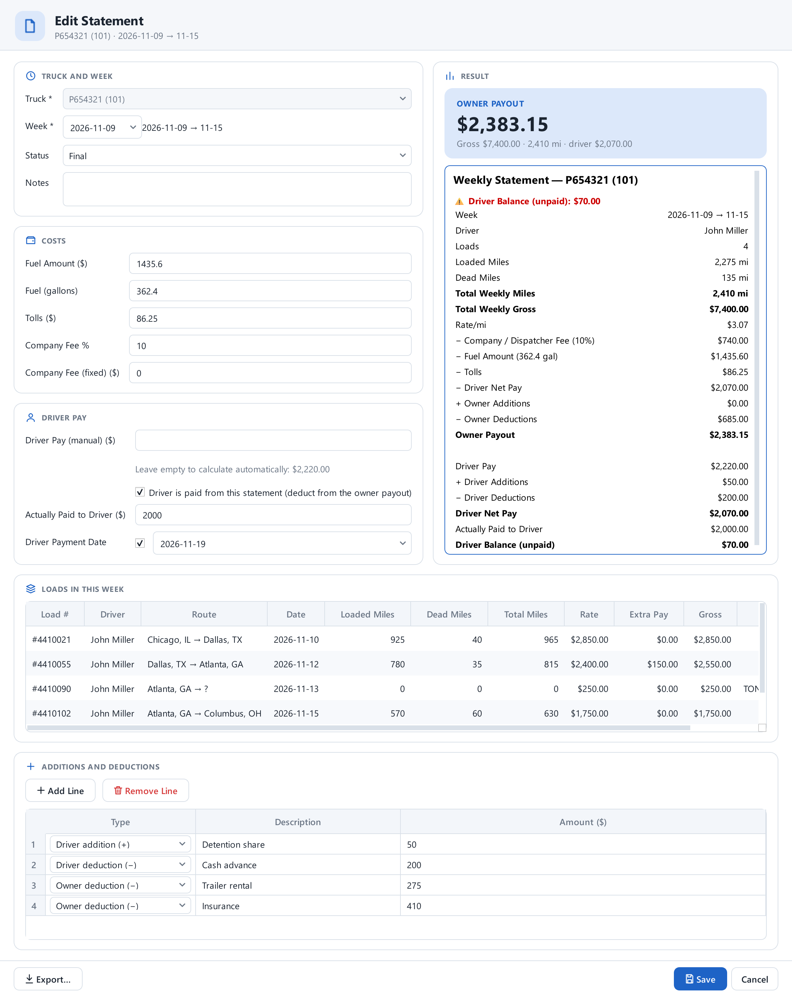
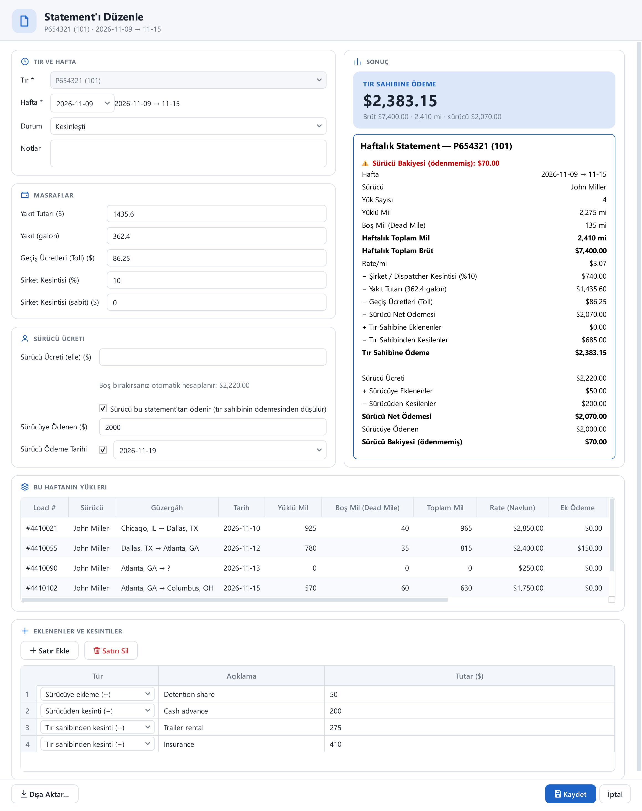
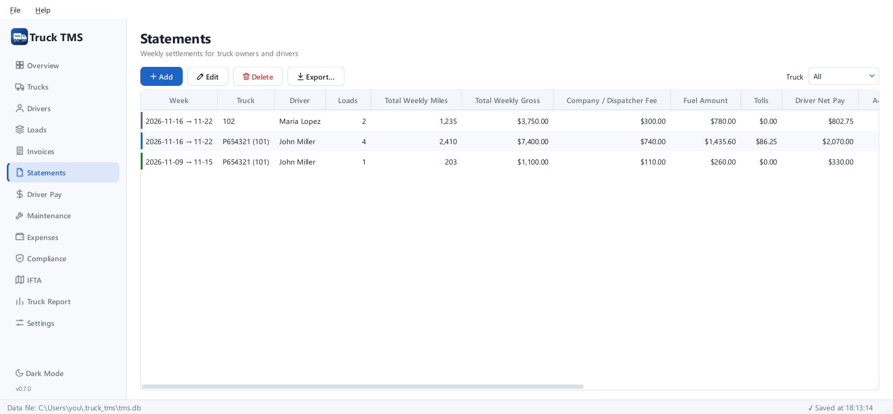
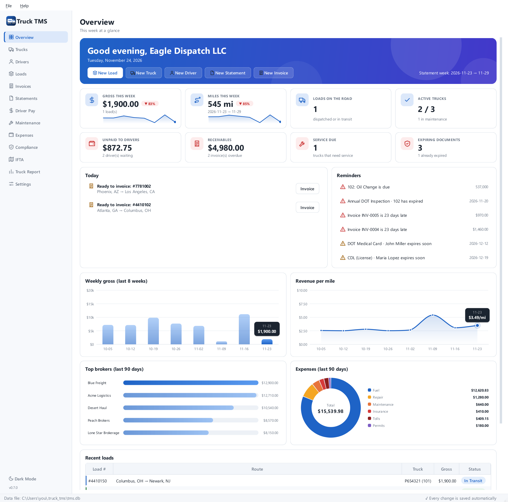
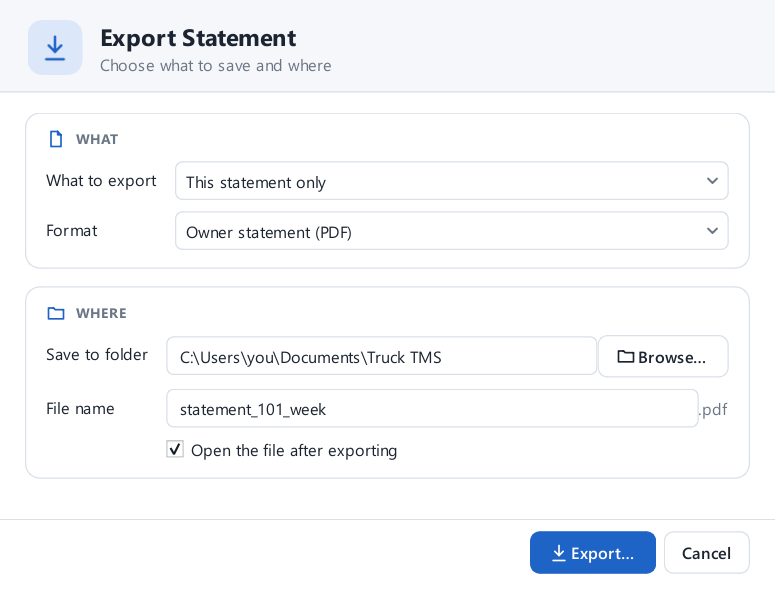

Truck TMS is a free, open-source desktop app for small trucking fleets, dispatchers and owner-operators. Trucks, drivers, loads, weekly statements and maintenance live in one place, on your own computer. Truck TMS; küçük nakliye filoları, dispatcher'lar ve kendi tırıyla çalışanlar için ücretsiz, açık kaynaklı bir masaüstü uygulamasıdır. Tırlar, sürücüler, yükler, haftalık statement'lar ve bakım tek bir yerde, kendi bilgisayarınızda.
Free · MIT license · Windows 10/11 · English & Türkçe · No account, no cloud Ücretsiz · MIT lisansı · Windows 10/11 · Türkçe & English · Hesap yok, bulut yok


Enter only what you know; every load detail is optional. Fill in the rest later, and the totals update by themselves. Yalnızca bildiğinizi girin; yük detaylarının hepsi isteğe bağlıdır. Gerisini sonra tamamlarsınız, toplamlar kendiliğinden güncellenir.
Plate, unit # or both. US makes (Freightliner, Kenworth, Peterbilt…), odometer, owner, and a plate history. Plaka, araç kodu ya da ikisi. ABD markaları (Freightliner, Kenworth, Peterbilt…), sayaç, tır sahibi ve plaka geçmişi.
CDL and expiration, pay as a percentage, per mile or fixed weekly, an unpaid balance per driver, and a pay summary for any period. Ehliyet (CDL) ve bitiş tarihi; yüzde, mil başına veya sabit haftalık ücret; ödenmemiş bakiye ve istediğiniz dönem için ödeme özeti.
A list or a drag-and-drop board from Planned to Paid. Rate and extra pay, loaded and dead miles, TONU, and the estimated profit of every load. Liste ya da Planlandı'dan Ödendi'ye sürükle-bırak pano. Rate ve ek ödeme, yüklü ve boş mil, TONU ve her yükün tahmini kârı.
Fuel, tolls, dispatcher fee, driver pay, deductions and the owner payout, calculated for you. Yakıt, toll, dispatcher kesintisi, sürücü ücreti, kesintiler ve tır sahibine ödeme sizin yerinize hesaplanır.
One click from a load to a PDF invoice. Quick pay or factoring fees, partial payments, and an aging view of who owes you. Yükten tek tıkla PDF fatura. Quick pay ya da factoring kesintisi, kısmi ödemeler ve kimin ne kadar geciktiğini gösteren yaşlandırma.
CDL, medical card, registration, insurance, annual inspection, UCR and Form 2290. Reminders start 30 days before anything expires. CDL, sağlık kartı, ruhsat, sigorta, yıllık muayene, UCR ve Form 2290. Süresi dolmadan 30 gün önce hatırlatılır.
Miles by state and fuel by state turn into fleet MPG, taxable gallons and the tax or credit for each jurisdiction. Eyalet bazında mil ve yakıt; filo MPG'si, vergiye tabi galon ve her eyalet için vergi ya da alacak olarak hesaplanır.
Service records with cost and shop. The truck list warns you in red when the next service is due. Tutarı ve servisiyle bakım kayıtları. Sonraki bakım zamanı geldiğinde tır listesi kırmızıyla uyarır.
Owner PDF, driver PDF or CSV, for one statement or the whole week. You choose the folder and the file name. Tır sahibi PDF'i, sürücü PDF'i veya CSV; tek statement ya da bütün hafta. Klasörü ve dosya adını siz seçersiniz.
Every change is saved instantly. Daily automatic backups, plus backup copies whenever you want. Her değişiklik anında kaydedilir. Her gün otomatik yedek alınır, istediğiniz an yedek kopya da alabilirsiniz.
The whole app, PDFs included, in both languages, with a white or black theme. PDF'ler dâhil uygulamanın tamamı iki dilde; beyaz veya siyah tema seçeneğiyle.
No account, no cloud: your data stays in one file on your PC. Thousands of loads open in well under a second. Hesap yok, bulut yok: verileriniz bilgisayarınızda tek bir dosyada kalır. Binlerce yük bir saniyeden kısa sürede açılır.
Still fast. Measured with 6,000 loads:Hâlâ hızlı. 6.000 yükle ölçüldü:
Owner payout = weekly gross − company / dispatcher fee − fuel − tolls − driver net pay + owner additions − owner deductions Driver net = driver pay + additions − deductions Balance = driver net − actually paidTır sahibine ödeme = haftalık brüt − şirket / dispatcher kesintisi − yakıt − toll − sürücü net ödemesi + eklenenler − kesintiler Sürücü net = ücret + eklenenler − kesilenler Bakiye = sürücü net − gerçekte ödenen



From the latest release, get TruckTMS-Setup.exe to install it with Start menu and desktop shortcuts, or the portable TruckTMS.exe. No Python needed. Son sürümden Başlat menüsü ve masaüstü kısayoluyla kurmak için TruckTMS-Setup.exe'yi ya da taşınabilir TruckTMS.exe'yi indirin. Python gerekmez.
A truck drives into the night while the app loads, then a three-step guide helps you add your first truck, driver and load. Uygulama yüklenirken bir tır geceye doğru ilerler; ardından üç adımlık rehber ilk tırınızı, sürücünüzü ve yükünüzü eklemenize yardım eder.
Run TruckTMS.exe --db demo.db --demo to explore with sample trucks, loads and statements.
Örnek tır, yük ve statement'larla denemek için TruckTMS.exe --db demo.db --demo komutunu çalıştırın.
git clone https://github.com/ArslanEren-Dev/truck-tms.git cd truck-tms python -m venv .venv .venv\Scripts\activate # macOS/Linux: source .venv/bin/activate pip install -e . truck-tms
MIT licensed. Bug reports, ideas and pull requests are welcome, and so are new languages. MIT lisanslı. Hata bildirimleri, fikirler, pull request'ler ve yeni dil çevirileri memnuniyetle karşılanır.